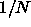
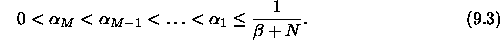
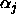
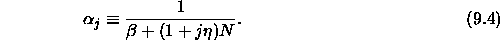
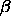

First the ART1 initialization function ART1_Weights has to be selected from the list of initialization functions.
ART1_Weights is responsible to set the initial values of the trainable
links in an ART1 network. These links are the ones
from F to F
to F and the ones from F
and the ones from F to F
to F respectively.
respectively.
The F
 F
F links are all set to 1.0 as described
in [CG87a]. The weights of the links from F
links are all set to 1.0 as described
in [CG87a]. The weights of the links from F to F
to F are
a little more difficult to explain. To assure that in an initialized
network the F
are
a little more difficult to explain. To assure that in an initialized
network the F units will be used in their index order,
the weights from F
units will be used in their index order,
the weights from F to F
to F must decrease with increasing index. Another
restriction is, that each link-weight has to be greater than 0 and
smaller than
must decrease with increasing index. Another
restriction is, that each link-weight has to be greater than 0 and
smaller than

. Defining as a link-weight from a
F
as a link-weight from a
F unit to the jth F
unit to the jth F unitthis yields
unitthis yields

To get concrete values, we have to decrease the fraction on the right side with increasing index j and assign this value to

. For this reason we introduce the value and we obtain
and we obtain

 is calculated out of a new parameter
is calculated out of a new parameter  and the
number of F
and the
number of F units M:
units M:
So we have two parameters for ART1_Weights:  and
and
 . For both of them a value of 1.0 is useful for the
initialization. The first parameter of the initialization function is
. For both of them a value of 1.0 is useful for the
initialization. The first parameter of the initialization function is

, the second one is . Having chosen
. Having chosen  and
and
 one must press the
one must press the  -button to perform
initialization.
-button to perform
initialization.
The parameter  is stored in the bias field of the unit
structure to be accessible to the learning function when
adjusting the weights.
is stored in the bias field of the unit
structure to be accessible to the learning function when
adjusting the weights.
One should always use ART1_Weights to initialize ART1 networks. When using another SNNS initialization function the behavior of the simulator during learning is not predictable, because not only the trainable links will be initialized, but also the fixed weights of the network.